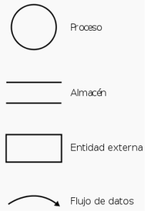
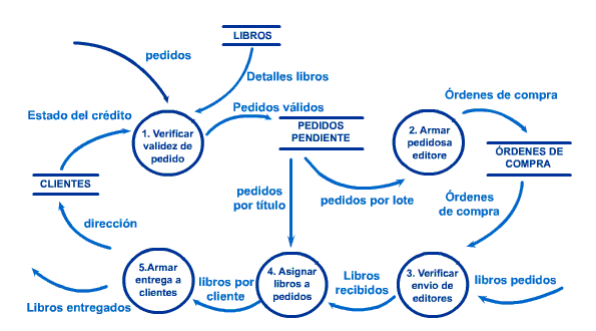

Un diagrama de fluxo de datos (DFD) é unha representación gráfica do fluxo de datos a través dun sistema de información. Os DFD foron inventados por Larry Constantine, o desenvolvedor orixinal do deseño estruturado.
Os DFD non só se poden utilizar para modelar sistemas de sistemas de proceso de información, senón tamén como xeito de modelar organizacións enteiras, como unha ferramenta para o planeamento estratéxico e de negocios.
Compoñentes:
Proceso:
Parte do sistema que transforma entradas en saídas. Algúns analistas prefiren usar un óvalo ou un rectángulo con esquinas redondeadas, pero estas formas son puramente cosméticas, aínda que obviamente é importante usar a mesma forma de xeito consistente para representar todas as funcións dun sistema.
O nome que se lle asigne xeralmente consiste nunha frase verbo-obxecto tal como Validar Entrada.
Fluxo:
Un fluxo represéntase graficamente por medio dunha frecha que entra ou sae dun proceso. O fluxo úsase para describir o movemento de bloques ou paquetes de información dunha parte do sistema a outra. O nome representa o significado do paquete que se move ao longo do fluxo.
Almacéns:
O almacén utilízase para modelar unha colección de paquetes de datos en repouso. Denótase por dúas liñas paralelas. Os fluxos representan datos en movementos, mentres que os almacéns representan datos en repouso.
Entidade externa ou Terminador:
Graficamente represéntase como un rectángulo. Representan entidades externas coas cales o sistema se comunica. Comunmente encóntrase fóra do control do sistema que está a modelar. Nalgúns casos pode ser outro sistema computacional co cal este se comunica.
